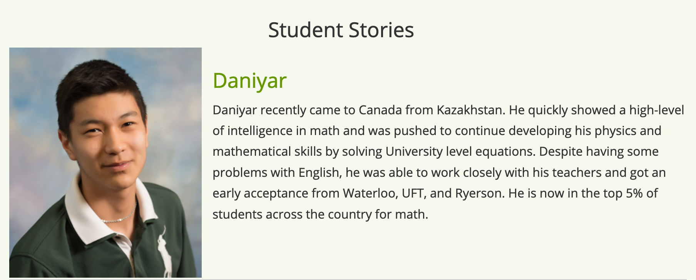
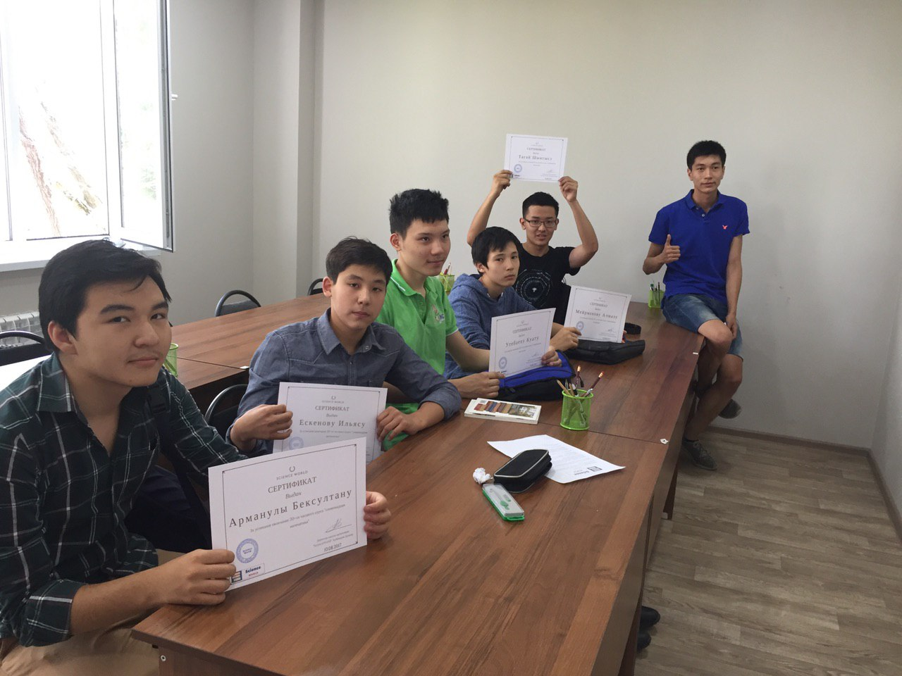
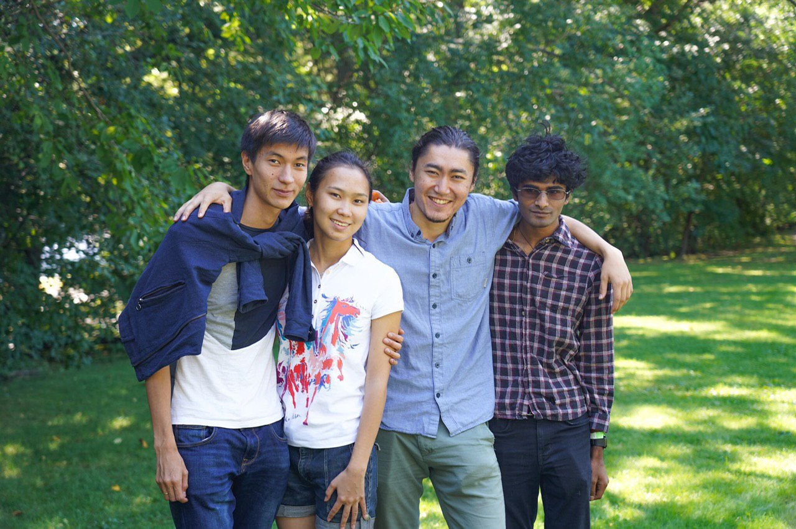

Hello, World!
Hello, World! I just created this website and therefore very happy. Why did I do that? Every day I have so many different thoughts about mathematics, programming, education, startups, politics in Kazakhstan, life in America, magic that I just need to write them all down somewhere. Hopefully, this website will become a box with all my crazy thoughts.
So who am I? My name is Daniyar (Dan-e-ar or just Dan). I was born in the Republic of Kazakhstan - the world's largest landlocked country, and the ninth-largest country in the world. In sixth grade, I fell in love with mathematics and after that, I dedicated my school time for math olympiads. During that time I won some math competitions: Final Round of National Math Olympiad, Kazakhstan (Silver); International Zhautykov Olympiad, Kazakhstan (Bronze, Bronze, Bronze); Junior Balkan Math Olympiad, Greece (Silver); "Mnogoborie" Math Olympiad, Russia (1st place, 1st place, 3rd place); Vers les Grandes Mathematique, France (1st place), Tournament of Towns (1st prize, 1st prize, 1st prize, 1st prize, 1st prize ). In 11th grade, I received an invitation from Canadian high school to complete my last year there. As a result, I was able to complete the Ontario Secondary School Diploma requirements in 6 months and graduate earlier with GPA of 94%. Thanks to the support of my family and school I was accepted to all universities I applied to: University of Waterloo, University of Toronto, Ryerson University, York University, London School of Economics, City University of London, Warwick University and University of Manchester. However, after I went back to Kazakhstan I decided to reject all the offers.
Boom! Yes, in my country, the rejection of higher education means shame, but I understood what I was going for. I had a plan and thousands of different ideas that I wanted to realize.
Firstly, I was preparing high school students for different math competitions. A couple of them won International Math Olympiad (IMO), some won National Math Olympiads, but for me, the main thing is that they all got a little more educated.
Secondly, I was actively contributing to the math olympiad movement by organizing different math competitions in Kazakhstan. I Graded Olympiad works of high school students on European Mathematical Cup (2016, 2017), National Mathematical Olympiad, Regional Round (2015, 2016), Tournament of Towns (2015, 2016, 2017, 2018), Sharygin Geometry Olympiad, Oral round (2017, 2018) In 2016 organized first European Mathematical Cup in Kazakhstan. Next year expanded the competition to three other cities. Arranged first participation of Kazakhstan in the Harvard-MIT Mathematical Tournament in 2016 (and further launched GoBoston company which is still allowing students from Kazakhstan to participate in different math competitions in the USA).
Finally, I launched several startups. Even though almost all of them failed, I gained invaluable experience. I learned marketing, accounting, management, sales learned how to wash floors, how to communicate with people, how to drive nails, how not to sleep 50 hours, how to waste all earned money, and the best part is how to earn the first million at age 17. Yes, in my country a million tenge is not so much (at that time it was about $ 3000), but it was a magnificent feeling when I can take my girlfriend to a restaurant with my own money. By the way, it was thanks to her that I eventually went to university.
I learned how to wash floors.
My wife (girlfriend at that time) got accepted to MIT, so I decided to move to the USA with her. I still did not have much money, so I found a cheap college and September 2018 I was in Boston with almost no money, great fear but with a clear plan. I was taking 18+ credits every semester to be able to graduate earlier and as a result, I graduated from Bunker Hill CC with an Associate's degree in Computer Science with an almost (3.9/4.0) perfect GPA in 1.5 years instead of 2. Now I am starting (in Fall) my Senior year at Suffolk University where I am double majoring in Mathematics and Computer Science. I have only two semesters left and everything goes according to the plan I will complete my bachelor with a double major in three years total (including time spent on Associates degree). May 2021 when I will graduate I am planning to start working as a Software Engineer or Quantitative Developer depending on the company.
This is it for now. I will be posting more in the next posts.